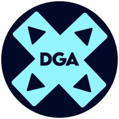
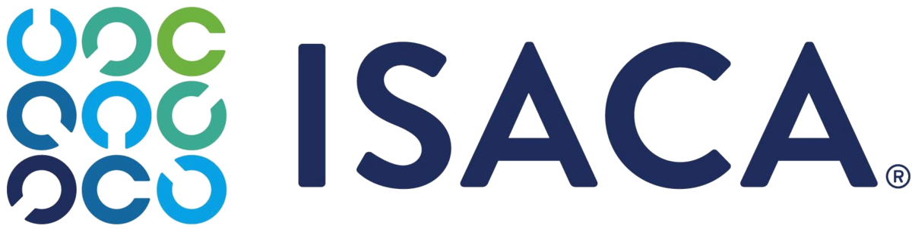

Professional Associations

DGA
The Drexel Gaming Association provides a place for gamers attending Drexel University to compete with peers in thier game of choice, against colleges from across the country.
I am currently the Rocket League game lead.
Visit Site
ISACA
ISACA is a global association supporting professionals in IT governance, cybersecurity, risk management, and auditing. It provides certifications like CISA and CISM, and hosts resources for digital trust.
Visit SiteAITP
The Association of Information Technology Professionals provides network and education opportunities in IT and computing fields.
Visit SiteCompTIA
The Computing Technology Industry Association is a leading voice in global IT education. It provides certifications like A+, Security+, and Network+ to support careers in IT, networking, and cybersecurity.
Visit Site